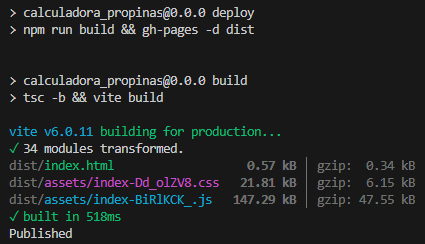
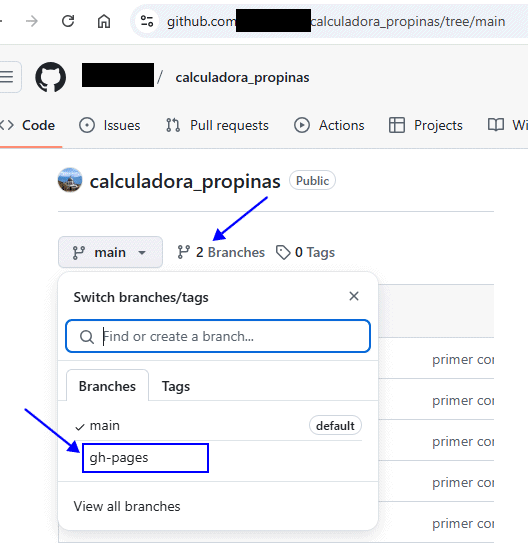
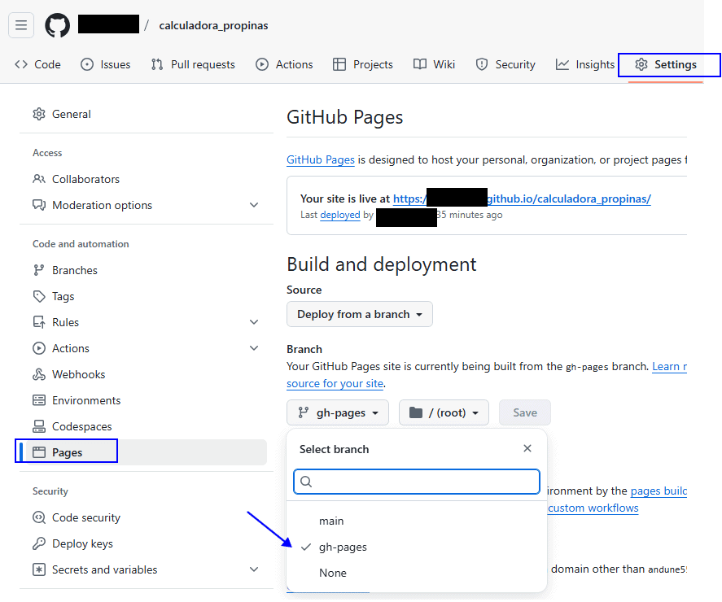
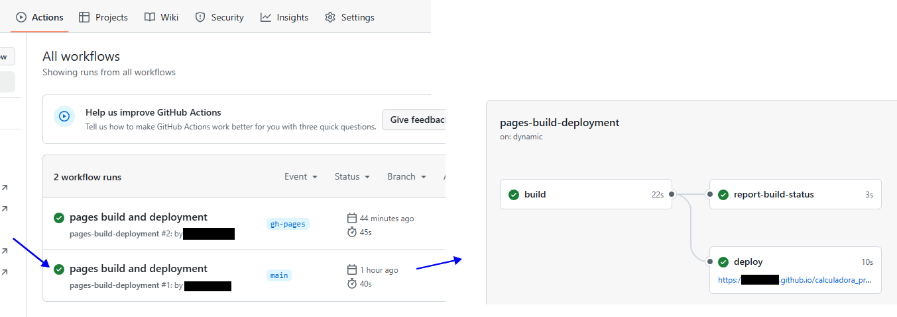
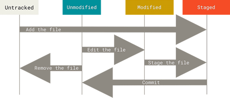
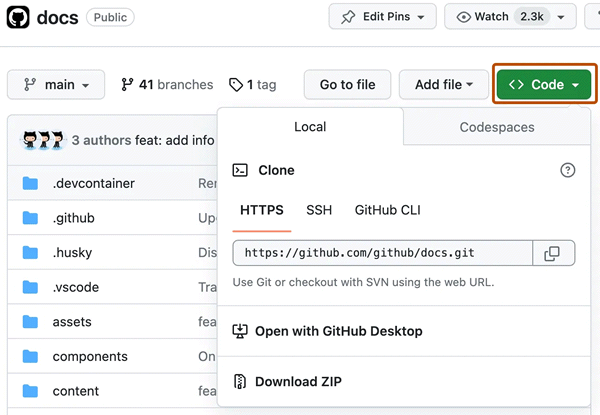

Tareas FO
- portfolio-XXX
- Códigos javascript de primeros videos
- Hacer build de Delorean
- Seguir con mejoras de diseño en nueva rama de calorie-tracker
- seguir limpiando estilos DIARIO
- Sección 11 Migrar el carrito de compras a useReducer --> 171-175 / 20-02 177 /
- Publicar Diario para TENERLO de consulta (QUITAR TODAS LAS REF PERSONALES POSIBLES Y CAMBIAR A NOMBRE)
- Actualizar el portfolio con Calorie Tracker ¿MEJORAS?
- Crear nueva rama y rediseñar guitarla-ur para añadirla al portfolio
- curso udemy react
- Quitar jquery de portfolio: - link DOM typescript -> https://fullstackpro.es/courses/curso-typescript/gestion-del-dom
- Arreglar despliegue automático portfolio en netlify (Nuevo y cambiar de nombre) X18/08 - XX19/02 (desinstalado cli de netlify y vuelto a instalar, no global sino dev)
- ¿Mejoras css en visualización de imágenes de proyectos?
- ¿Mejorar componente modal panel?
- Añadir boton encendido y apagado de CSS (y mirar mas)
- Páginas individuales para secciones (React Router Dom Diego Esteban)
- Hacer build de Calendario litúrgico
- Hacer build de Silmarillion
Proyectos y dependencias útiles npm
https://doesitmutate.xyz/ / Enlace MDN Arrays / Enlace MDN Element
ISO Language code references
Proyectos
Listado de proyectos
Crear proyecto e instalar dependencias útiles,...
MVSCode + Configuración y plugins + https://www.smashingmagazine.com/2021/06/custom-emmet-snippets-vscode/: Abra la configuración de VS Code (Código → Preferencias → Configuración) y busque “Ruta de extensiones de Emmet” Haga clic en “Agregar elemento”, ingrese la ruta a la carpeta donde guardó el archivo snippets.json que creó anteriormente y presione “Aceptar”
instalar node: https://nodejs.org/es/ (Requerimos node para crear nuestros proyectos pero también para instalar dependencias con npm) (47,48,49) Node.js con npm es bastante estable y es la herramienta/tecnología que usaremos para crear apps React --> Podríamos crear tu propio ambiente de desarrollo pero tienes que asegurarte de que cada versión nueva de React, cada version de las diferentes librerias sea compatible con tu proyecto y despues tienes que encontrar una forma de compilar código de css (sass etc) ...entonces vamos a gastar más tiempo en solucionar este tipo de cosas que tirando código. Por eso se recomienda usar una herramienta ya existente)
node -v--> v22.14.0
npm -v--> 10.9.2Solución a problema para instalar dependencias: Intentaba 'npm install' y no me dejaba. Solución en link --> https://www.cdmon.com/es/blog/la-ejecucion-de-scripts-esta-deshabilitada-en-este-sistema-te-contamos-como-actuar
Para listar las dependencias npm instaladas: npm ls
Crear proyecto:
- Vamos al directorio donde queremos crearlo
- npm create vite@latest > calorie-tracker > react TypeScript + SWC > npm install
- arrancamos el servidor de desarrollo npm run dev y hacemos limpieza: eliminamos carpeta src>assets, eliminamos src>App.css, borramos el contenido de index.css, en index.html cambiamos el title y eliminamos icono
<link rel="icon" type="image/svg+xml" href="/vite.svg" />. Aquí lo podemos sustituir por el personalizado que creemos con https://realfavicongenerator.net/ (borramos también el icono vite.svg de la carpeta public) y limpiamos el compo ppal App.tsx.
- Para despliegue en un sitio estático (github pages y Netlify): - instalar cli y deploy en netlify
- Creamos los dos sitios en github - https://github.com/ (añadir repositorio) y Netlify - https://app.netlify.com/ (hacemos un build y llevamos a mano la carpeta dist)
- Creo repo local git, primera foto, primer commit: git init + git add . + git commit -m "primer commit" + y con esta info que nos da Github en cuanto creamos el repositorio, establecemos el origen remoto + ¿nos situamos en la rama main? + ¿hacemos un push a esa rama?:
- git remote add origin https://github.com/andXXXX5/XXXXXXXXX.git
- git branch -M main
- git push -u origin main
- npm install --save-dev gh-pages - https://www.npmjs.com/package/gh-pages - gh-pages: librería de npm para poder trabajar y desplegar aplicaciones en github pages.
- npm install netlify-cli -g CLI de Netlify: lo instalo global (supuestamente era mejor instalarlo de manera local con: npm install --save-dev netlify-cli según lo que dice el link del paquete link, pero me daba problemas )
- en vite.config.ts configuramos el 'base' y en package.json añadimos nuestros scripts personalizados para compilar y desplegar en uno o compilar y desplegar en los dos sitios (En Netlify nos preguntará si queremos asociarlo con un id del sitio, lo copiamos y especificamos la carpeta dist en la siguiente pregunta):
//vite.config.ts ... export default defineConfig({ base:"https://andXXXX5.github.io/XXXXXXXXX/", plugins: [//package.json ... "scripts": { ..., "dpgh": "npm run build && gh-pages -d dist", "dpnet": "npm run build && ntl deploy --prod", "dpall": "npm run build && gh-pages -d dist && ntl deploy --prod"
-
Instalar tailwindcss https://tailwindcss.com/docs/installation/using-vite
- npm install tailwindcss @tailwindcss/vite
- configurar el plugin:
//vite.config.ts import tailwindcss from '@tailwindcss/vite' export default defineConfig({ plugins: [ tailwindcss(), ], }) - importar tailwindcss en nuestra css principal:
//src>index.css @import "tailwindcss";
- npm i react-hook-form - https://react-hook-form.com/ - React Hook Form: es una librería para para la parte de validación y procesamiento de nuestros formularios de manera bastante sencilla.
- npm i zustand - https://www.npmjs.com/package/zustand - github zustand - Zustand: administrador para manejar un estado global de forma muy simple
- npm i uuid - https://www.npmjs.com/package/uuid - uuid: es una dependencia para generar id
import { v4 as uuidv4 } from 'uuid' ... uuidv4() -
npm install react-date-picker
Buscamos en https://www.npmjs.com/ react-date-picker y elegimos este que vemos que soporta TS https://www.npmjs.com/package/react-date-picker. En esa misma página hay instrucciones sobre cómo utilizarlo. Instalamos con npm install react-date-picker. Vamos a ExpenseForm.tsx e importamos DatePicker, las dos hojas de estilo. A continuación creamos los 2 types que están en la documentación de la dependencia (estos mejor, los llevamos al fichero de types que vamos a crear, ver siguiente punto) y con esto ya podemos comenzar a utilizarlo, marcar una fecha, la cual aparecerá ahí una vez empecemos a escribir en el state:
//ExpenseForm.tsx import DatePicker from 'react-date-picker' import 'react-date-picker/dist/DatePicker.css'; import 'react-calendar/dist/Calendar.css'; type ValuePiece = Date | null type Value = ValuePiece | [ValuePiece, ValuePiece]Si vemos en la app ya nos aparece este calendario personlizado (que podríamos haber usado un input type="date" pero quería mostrarnos como hacerlo con una dependencia).

- npm i react-toastify - https://www.npmjs.com/package/react-toastify - React-Toastify: para notificaciones
- npm install @heroicons/react - https://heroicons.com/ - Hero icons
- The 24x24 outline icons can be imported from @heroicons/react/24/outline, the 24x24 solid icons can be imported from @heroicons/react/24/solid, the 20x20 solid icons can be imported from @heroicons/react/20/solid, and 16x16 solid icons can be imported from @heroicons/react/16/solid. - Browse the full list of icon names on UNPKG →import { BeakerIcon } from '@heroicons/react/24/solid' function MyComponent() { return ( <div> <BeakerIcon className="size-6 text-blue-500" /> <p>...</p> </div> ) }- @headlessui npm install @headlessui/react (vídeo 202) - @headlessui/react
- npm i react-swipeable-list (vídeo 215) - react-swipeable-list - gist para para swipleable List
OJO me daba este error y blancazo interfaz:
16:44:03 [vite] (client) error while updating dependencies:
Error: Build failed with 1 error:
node_modules/react-swipeable-list/dist/react-swipeable-list.esm.js:2:22: ERROR: Could not resolve "prop-types"
Solucionado con
As of React 15.5.0, PropTypes have been removed from the core React package as a separate dependency. To fix this, add prop-types into your code: If you're loading via script tags:
<script src="https://unpkg.com/prop-types/prop-types.min.js"></script> Or via NPM:
npm install --save prop-types
- npm i react-circular-progressbar - React Circular Progressbar(vídeo 224)
- npm i react-speakup (proyecto notas-fos)- react-speakup - github react-speakup
Dentro del componente VoiceToText.tsx esta es la manera en que configuro las dos únicas props configurables (idioma y grabación continua):
//VoiceToText.tsx const VoiceToText = () => { //props de la librería const { startListening, transcript, reset } = useVoiceToText({lang:'es-ES', continuous: false})Instalar prism: npm install prismjs. Una vez que se ha instalado la dependencia ya lo podemos importar en nuestros componentes:
// Importing Prism.js import Prism from 'prismjs' // Importing a language import 'prismjs/components/prism-javascript' // Importing a theme import 'prismjs/themes/prism-tomorrow.css'De momento este es mi componente 'CodePrism.tsx' y su uso desde el compo ppal 'App.tsx'
//App.tsx <CodePrism code={` // Importing Prism.js import Prism from 'prismjs' // Importing a language import 'prismjs/components/prism-javascript' // Importing a theme import 'prismjs/themes/prism-tomorrow.css' `} language={'js'} />//CodePrism.tsx import { useEffect } from 'react'; import Prism from 'prismjs' import 'prismjs/themes/prism-tomorrow.css'; // Importing a Prism theme import 'prismjs/components/prism-javascript' // Importing js language import 'prismjs/components/prism-typescript' // Importing ts language type CodePrismProps = { code: string, language: string } export default function CodePrism({code, language} : CodePrismProps) { useEffect(() => { Prism.highlightAll(); }, [code, language]); return ( <pre> <code className={`language-${language}`}> {code} </code> </pre> ) }Desinstalar prism: npm uninstall prisma @prisma/client
Automatizar despliegue de la app de ReactJS +Vite en GitHub Pages
GitHub Pages es un servicio de alojamiento de sitios web estáticos que permite a los usuarios publicar sitios web directamente desde un repositorio en GitHub. GitHub Pages permite tomar archivos HTML, CSS y JavaScript del repositorio y publicarlos como un sitio web en vivo en Internet.
- Tener un repositorio creado: https://github.com/XXXXXXX55/XXXXXXXXXXXXXX/
- Modificar la opción base de nuestro archivo vite.config.js. En el contexto de un archivo de configuración de Vite, la opción base se refiere a la ruta base de nuestra aplicación cuando se sirve en un entorno de producción. Esta opción es parte de la configuración de construcción (build) de Vite.
//vite.config.js import { defineConfig } from 'vite' import tailwindcss from '@tailwindcss/vite' import react from '@vitejs/plugin-react-swc' // https://vite.dev/config/ export default defineConfig({ base: "https://XXXXXX.github.io/XXXXX/", plugins: [ react(), tailwindcss() ], }) - npm install --save-dev gh-pages <-- Instalamos la librería de NPM para poder trabajar y desplegar aplicaciones en github pages llamada “gh-pages” https://www.npmjs.com/package/gh-pages:
- Ya con nuestro paquete instalado, En nuestro package.json creamos un nuevo script de NPM para ayudarnos a realizar el empaquetado y el despliegue. A este script lo llamomos "deploy".
.... "scripts": { .... "deploy": "npm run build && gh-pages -d dist" }, ... - npm run deploy <-- Ejecutamos nuestro script para poder desplegar. 
- Al acceder a nuestro repositorio, notaremos la presencia de una nueva rama llamada “gh-pages”. La rama “gh-pages” es una convención utilizada en GitHub para la publicación de sitios web directamente desde un repositorio. Cuando habilitas GitHub Pages para un repositorio, este servicio busca automáticamente una rama llamada “gh-pages” para construir y desplegar el sitio web asociado. 
- En Settings>Pages> seleccionamos la rama gh-pages 
- npm run deploy <-- Ejecutamos de nuevo nuestro script para poder desplegar (el anterior lo ha hecho en la main).
- Si nos vamos a la pestaña de “Actions” notaremos que se ha creado un nuevo “Workflow” y se ha ejecutado. En GitHub, un “workflow” (flujo de trabajo) se refiere a la automatización de una serie de pasos que se ejecutan cada vez que ocurre un evento específico en nuestro repositorio. Estos eventos pueden incluir acciones como el envío de cambios a un repositorio (push), la creación de una solicitud de extracción (pull request), o incluso el calendario programado.. Hemos creado y ejecutado nuestro flujo de trabajo utilizando el paquete “gh-pages” de NPM. Esto significa que hemos automatizado todo el proceso necesario para llevar a cabo el despliegue de manera eficiente y sin intervención manual. Por último, para visualizar nuestra web en GitHub, debemos dar clic a nuestro workflow y revisar los detalles. Dentro de los detalles se encontrará la URL de nuestro sitio. 
Deploy automatizado en Netlify conectado con cuenta de Github
Instalar CLI de Netlify (MEJOR el primero ver link): npm install --save-dev netlify-cli npm install netlify-cli -g

Respaldo git de web smmdd 16-02-25
- Creo repositorio privado https://github.com/an.....5/websmmdd
- Como hay un límite de espacio en github, creo en el raíz de mi carpeta local un .gitignore donde incluyo carpetas como documentos, flip-book, temp,... (solo quiero - subir las versiones últimas funcionales de los htmls, phps...pero SOBRE TODO LOS JS DE LECTURAS Y CALENDARIO LITURGICO PARA TENER ALMACENADAS VERSIONES OPERATIVAS ANTE POSIBLE FALLO)
- me situo en la terminal en mi carpeta local C:\Users\XXXXXXXX\OneDrive\Webs\Web SMMDD
- desde el terminal de VSC:
- git init
- git add .
- git commit -m "first commit"
- git branch -M main
- git remote add origin https://github.com/an.....5/websmmdd.git
- git push -u origin main
A partir de ahora su quiero innovar, probar, cambiar algo en js de lecturas, arranco mi local server con xamp y cuando esté seguro de que funciona el cambio:- respaldo cambio de mi repo local en mi repo github
- subo con dw al hosting de la parro
Git, Herramientas
Git GitHub
GIT
-
git init Inicializar repositorio en un directorio existente: esto crea un nuevo subdirectorio llamado .gitque contiene todos los archivos necesarios del repositorio: un esqueleto de repositorio de Git. En este punto, todavía no se realiza ningún seguimiento de nada en el proyecto.
cd C:/Users/user/my_project git init -
git add Comando multipropósito que se ursa para 1)Realizar seguimiento de archivos, 2)preparar archivos 3)mas cosas(por ej marcar archivos con conflictos de fusión como resueltos.): comenzar a rastrear archivos nuevos
git add *.c git add LICENSE git commit -m 'Initial project version'Si modificamos un fichero que ya teniamos "preparado" con un git add previo, el commit no va a subir esta nueva modificación. siempre que modifiquemos hemos de hacer un git add(preparar la foto) antes de un nuevo commi(una nueva foto)t
-
git clone Clonar un respositorio existente: Esto crea un directorio llamado libgit2, inicializa un .gitdirectorio dentro de él, extrae todos los datos de ese repositorio y extrae una copia funcional de la última versión. Si ingresa al nuevo libgit2directorio que se acaba de crear, verá los archivos del proyecto allí, listos para trabajar en ellos o usarlos (Si desea clonar el repositorio en un directorio con un nombre distinto de libgit2, por ejemplo mylibgit, puede especificar el nuevo nombre del directorio como un argumento adicional:)
git clone https://github.com/libgit2/libgit2 git clone https://github.com/libgit2/libgit2 mylibgitYa tenemos nuestro repositorio git y una copia de trabajo=verificación de nuestros archivos. Empezamos a hacer cambios y confirmar instantáneas de esos cambios en nuestro repositorio cada vez que queramos registrar el avance. Cada archivo en tu directorio de trabajo puede estar en uno de dos estados: rastreado o no rastreado
- Los archivos rastreados son archivos que Git conoce: son archivos que estaban en la última instantánea, así como cualquier archivo recién almacenado; pueden estar sin modificar, modificados o almacenados.
- Los archivos sin seguimiento son todo lo demás: cualquier archivo en nuestro directorio de trabajo que no estaba en la última instantánea y que no está en tu área de ensayo. Cuando clonas un repositorio por primera vez, todos tus archivos serán rastreados y no modificados porque Git los acaba de extraer y no has editado nada
A medida que editas archivos, Git los ve como modificados, porque los has cambiado desde la última confirmación. Mientras trabajas, preparas selectivamente estos archivos modificados y luego confirmas todos esos cambios preparados, y el ciclo se repite
 -
git status Cómo comprobar el estado de los archivos: Si ejecutamos este comando directamente después de una clonación, deberíamos ver algo como lo siguiente que significa que tenemos un directorio de trabajo limpio; en otras palabras, ninguno de tus archivos rastreados se modifica. Git tampoco ve ningún archivo sin rastrear, o estarían listados aquí. Finalmente, el comando te dice en qué rama estás y te informa que no se ha desviado de la misma rama en el servidor. Por ahora, esa rama siempre es main, que es la predeterminada; Git Branching revisará las ramas y referencias en detalle.:
git status On branch main Your branch is up-to-date with 'origin/main'. nothing to commit, working tree cleanSi por ejemplo añadimos un archivo README con echo 'My Project' > README y hacemos un git status nos dirá que es un 'untracked file' y que usemos un git add para añadirlo al seguimiento.
-
git status -s git status --shortEstado breve: Si bien el git statusresultado es bastante completo, también es bastante extenso. Git también tiene un indicador de estado breve para que puedas ver los cambios de una manera más compacta. Hay dos columnas en la salida: la columna de la izquierda indica el estado del área de preparación y la columna de la derecha indica el estado del árbol de trabajo.
git status -s M README //modificados MM Rakefile //modificado, preparado y luego se modificó nuevamente A lib/git.rb //los archivos nuevos que se han agregado al área de preparación M lib/simplegit.rb //archivos modificado y preparado ?? LICENSE.txt //archivos nuevos que no se rastrean -
cat .gitignoreIgnorar archivos: archivos que no queremos que Git agregue automáticamente o que muestre como no rastreados. Por lo general, se trata de archivos generados automáticamente, como archivos de registro o archivos producidos por el sistema de compilación. Creamos un archivo que incluya patrones para que coincidan con ellos y se llame .gitignore. Git tiene ejemplos completos de ficheros .gitignore para distintos tipos de proyectos aquí: ejemplos .gitignore
$ cat .gitignore *.[oa] // le dice a Git que ignore cualquier archivo que termine en “.o” o “.a” (archivos de objetos y archivos que pueden ser el producto de la creación de su código) *~ // le dice a Git que ignore todos los archivos cuyos nombres terminen con una tilde ( ~), que muchos editores de texto, como Emacs, usan para marcar archivos temporalesLas reglas para los patrones que puedes poner en el archivo .gitignore son las siguientes:
- Las líneas en blanco o las líneas que comienzan con #se ignoran.
- Los patrones glob estándar funcionan y se aplicarán de forma recursiva en todo el árbol de trabajo.
- Puedes iniciar patrones con una barra diagonal ( /) para evitar la recursividad.
- Puede finalizar los patrones con una barra diagonal ( /) para especificar un directorio.
- Puedes negar un patrón iniciándolo con un signo de exclamación ( !).
- Los patrones glob son como expresiones regulares simplificadas que utilizan los shells.
- Un asterisco ( *) coincide con cero o más caracteres;
- [abc]coincide con cualquier carácter dentro de los corchetes (en este caso a, b o c);
- un signo de interrogación ( ?) coincide con un solo carácter;
- los corchetes que encierran caracteres separados por un guion ( [0-9]) coinciden con cualquier carácter entre ellos (en este caso del 0 al 9).
- También puede usar dos asteriscos para que coincidan con directorios anidados; a/**/zcoincidiría con a/z, a/b/z, a/b/c/z,
//Ejemplo de .gitignore # ignore all .a files *.a # but do track lib.a, even though you're ignoring .a files above !lib.a # only ignore the TODO file in the current directory, not subdir/TODO /TODO # ignore all files in any directory named build build/ # ignore doc/notes.txt, but not doc/server/arch.txt doc/*.txt # ignore all .pdf files in the doc/ directory and any of its subdirectories doc/**/*.pdf -
Visualizar cambios preparados y no preparados. ¿Qué has cambiado pero aún no has preparado? ¿Qué has preparado que estás a punto de confirmar? Aunque git statusresponde a las preguntas de forma muy general al enumerar los nombres de los archivos, git diff te muestra las líneas exactas agregadas y eliminadas (el parche, por así decirlo).
git diff ¿Qué has cambiado pero aún no has preparado? : por sí solo, no muestra todos los cambios realizados desde la última confirmación, sino solo los cambios que aún no están preparados. Si ha preparado todos los cambios, git diff no se mostrará ningún resultado.
git diff --staged git diff --cached (--stagedy --cached son sinónimos) ¿Y qué has preparado que estás a punto de confirmar? Este comando compara los cambios preparados con su última confirmación -
git commit Commit!!! (confirmando cambios): ya con todo listo podemos confirmar(commit) nuestros cambios recordar que todo lo que aún no esté preparado (cualquier archivo que hayamos creado o modificado y que no hayamos ejecutado aún git add desde que lo editamos) no se incluirá en este commit.
git commit -v Para tener un recordatorio aún más explícito de lo que hemos modificado, coloc´ndose la diferencia de nuestro cambio en el editor para que podamos ver exactamente qué cambios estamos confirmando (commiteando).
git commit -m "detalles de nuestro commit" Como alternativa a lo anterior nosotros ponemos la "bandera", el texto que describe nuestro commit
$ git commit -m "Story 182: fix benchmarks for speed" [master 463dc4f] Story 182: fix benchmarks for speed 2 files changed, 2 insertions(+) create mode 100644 README¡Ya hemos creado nuestro primer commit! Podemos ver que el commit nos da información sobre sí mismo: a qué rama lo has enviado (master), qué suma de comprobación SHA-1 tiene el commit (463dc4f), cuántos archivos se modificaron y estadísticas sobre las líneas agregadas y eliminadas en el commit. Importante recordar que:
- El commit registra la instantánea que configuramos en nuestra área de preparación.
- Todo lo que no hayamos preparado sigue ahí modificado; puedes hacer otra confirmación para agregarlo a tu historial.
- Cada vez que realizamo un commit, estamos registrando una instantánea de nuestro proyecto a la que podemos volver o comparar más tarde.
- git commit -a -m "descripción del commit" Saltarnos el área de preparación: el área de preparación a veces es un poco más compleja de lo que necesitamos en nuestro flujo de trabajo. Si queremos omitir el área de preparación, Git ofrece un atajo simple: agregar la opción -a al comando git commit hace que Git prepare automáticamente cada archivo que ya está rastreado antes de realizar el commit, lo que nos permite omitir la parte del git add (esta bandera -a hace que se incluyan todos los archivos modificados) OJO CON USAR ESTO SIN TON NI SON, PUEDE HACER QUE SE INCLUYAN CAMBIOS QUE NO DESEAMOS INCLUIR
-
git rm Eliminando archivos: Para eliminar un archivo de Git, debes eliminarlo de tus archivos rastreados (en concreto, eliminarlo del área de preparación) y luego confirmarlo(commit). El comando git rm hace eso y también elimina el archivo del directorio de trabajo para que no lo veamos como un archivo sin seguimiento la próxima vez.
¡Ojo! Si simplemente eliminamos el archivo del directorio de trabajo con rm xxxx, aparecerá en el área “Cambios no preparados para confirmación” (es decir, no preparados) de nuestro status:$ rm PROJECTS.md $ git status On branch master Your branch is up-to-date with 'origin/master'. Changes not staged for commit: (use "git add/rm..." to update what will be committed) (use "git checkout -- ..." to discard changes in working directory) deleted: PROJECTS.md no changes added to commit (use "git add" and/or "git commit -a") Si ejecutamos a continuación git rm xxxx
$ git rm PROJECTS.md rm 'PROJECTS.md' $ git status On branch master Your branch is up-to-date with 'origin/master'. Changes to be committed: (use "git reset HEAD..." to unstage) deleted: PROJECTS.md La próxima vez que realicemos un commit, el archivo desaparecerá y ya no se rastreará. Si modificamos el archivo o ya lo habíamos agregado al área de preparación, debemoss forzar la eliminación con la opción -f. Esta es una función de seguridad para evitar la eliminación accidental de datos que aún no se han registrado en una instantánea y que no se pueden recuperar desde Git.
Si queremos mantener el archivo en el disco duro pero que git ya no lo rastree usamos la opción git rm --cached (mantener el archivo en el árbol de trabajo pero eliminarlo del área de preparación) Esto es particularmente útil si olvidamos añadir algo al .gitignore y lo preparamos accidentalmente, como por ejemplo un archivo de registro grande o un montón de archivos .a compilados.
Podemos pasarle a este comando de borrado archivos, directorios o patrones de archivos globales, por ejemplo:
- Para eliminar todos los archivos del directorio log/ que tienen la extensión .log:
git rm log/\*.log - Para eliminar todos los archivos cuyos nombres terminan con ~
git rm \*~
- Para eliminar todos los archivos del directorio log/ que tienen la extensión .log:
-
Mover archivos: A diferencia de muchos otros VCS, Git no rastrea explícitamente el movimiento de archivos. Si cambias el nombre de un archivo en Git, no se almacenan metadatos en Git que indiquen que cambiaste el nombre del archivo. Sin embargo, Git es bastante inteligente a la hora de averiguarlo después del hecho. Por lo tanto, resulta un poco confuso que Git tenga un comando mv. Si quieres cambiar el nombre de un archivo en Git, puedes ejecutar algo como: git mv file_from file_to y funciona bien. Si miramos el status vemos que git lo considera como un archivo renombrado aunque en verad equivale a ejecutar algo como esto:
$ mv README.md README $ git rm README.md $ git add READMEes decir es una función de conveniencia, mv es un único comando en vez de tres.
- TRABAJO CON RAMAS:
- Consultar las ramas que hay: git branch
- Consultar TODAS (locales y remotas) las ramas que hay: git branch -a
- Ver a donde apunta cada rama: git log
- Crear una rama: git branch nombre_rama
- Movernos a otra rama: git checkout nombre_rama
- Eliminar una rama: git branch -d nombre_rama. En el caso de que esa rama contenga trabajos sin fusionar, el comando anterior nos devolverá el siguiente error:
Y si aún así queremos eliminar esa rama: git branch -D nombre-ramaerror: The branch 'nombre-rama' is not an ancestor of your current HEAD. If you are sure you want to delete it, run 'git branch -D nombre-rama'. - Eliminar una rama del repositorio remoto git push origin :nombre-rama
- He creado nueva rama "rediseño1" en calorie-tracker y me he puesto a trabajar. Tras añadir git add ., y confirmar git commit -m "" mis cambios, cuando he intentado hacer un git push desde esa rama nueva "rediseño1", como no había añadido previamente esa rama en github para seguimiento me dice esto:
así que en vez de un git push he hecho un git push --set-upstream origin rediseño1 y yaprepara esa rama en github para seguimiento:PS C:\Users\FOS\Desktop\Curso React\calorie-tracker> git push fatal: The current branch rediseño1 has no upstream branch. To push the current branch and set the remote as upstream, use git push --set-upstream origin rediseño1 To have this happen automatically for branches without a tracking upstream, see 'push.autoSetupRemote' in 'git help config'.PS C:\Users\FOS\Desktop\Curso React\calorie-tracker> git push --set-upstream origin rediseño1 Enumerating objects: 17, done. Counting objects: 100% (17/17), done. Delta compression using up to 12 threads Compressing objects: 100% (9/9), done. Writing objects: 100% (9/9), 1.57 KiB | 1.57 MiB/s, done. Total 9 (delta 7), reused 0 (delta 0), pack-reused 0 (from 0) remote: Resolving deltas: 100% (7/7), completed with 7 local objects. remote: remote: Create a pull request for 'rediseño1' on GitHub by visiting: remote: https://github.com/an.....5/calory-tracker/pull/new/redise%C3%B1o1 remote: To https://github.com/an.....5/calory-tracker.git * [new branch] rediseño1 -> rediseño1 branch 'rediseño1' set up to track 'origin/rediseño1'. - Para establecer una rama ascendente como origen: $ git push --set-upstream-to origin master o versión abreviada $ git push -u origin master Esta operación garantiza que la rama master local haga un seguimiento de la rama master remota. Ahora ya podemos extraer con un git pull sin tener que especificar la rama remota de la que extraer. Consejos y trucos de STACK para desenredar
- OBTENER CAMBIOS DE UN REPO REMOTO: https://docs.github.com/es/get-started/using-git/getting-changes-from-a-remote-repository
Estos comandos son muy útiles al interactuar con un repositorio remoto. clone y fetch descargan código remoto desde la dirección URL remota de un repositorio al equipo local, merge se usa para combinar el trabajo de diferentes personas con el suyo, y pull es una combinación de fetch y merge.- Clonar un repositorio: git clone https://github.com/USERNAME/REPOSITORY.git obtiene una copia completa del repositorio de otro usuario.
Puede elegir entre varias direcciones URL diferentes al clonar un repositorio. Mientras esté registrado en GitHub, estas direcciones URL están disponibles en la página principal del repositorio al hacer clic en Código:
Al ejecutar git clone, tienen lugar las siguientes acciones:
- Se crea una carpeta con el nombre repo.
- Esta carpeta se inicializa como un repositorio de Git.
- Se crea un repositorio remoto denominado origin, que apunta a la dirección URL desde la que ha realizado la clonación.
- Todos los archivos y confirmaciones del repositorio se descargan aquí.
- La rama predeterminada está desmarcada.
Para cada rama foo del repositorio remoto, se crea una rama refs/remotes/origin/foo de seguimiento remoto correspondiente en el repositorio local. Normalmente, puede abreviar estos nombres de rama de seguimiento remoto a origin/foo.
- Extraer cambios de un repositorio remoto git fetch: para recuperar el nuevo trabajo realizado por otras personas. Al capturar desde un repositorio se obtienen todas las ramas de seguimiento remoto nuevas y etiquetas sin combinar estos cambios en las ramas propias.
Si ya tiene un repositorio local con una URL remota configurada para el proyecto deseado, puede capturar toda la información nueva si usa git fetch REMOTE-NAME en el terminal:$ git fetch REMOTE-NAME # Fetches updates made to a remote repository - Fusionar cambios en tu rama local: $ git merge REMOTE-NAME/BRANCH-NAMELa fusión combina tus cambios locales con los cambios realizados por otros. Por lo general, fusionas una rama de seguimiento remoto (es decir, una rama extraída desde un repositorio remoto) con tu rama local:
$ git merge REMOTE-NAME/BRANCH-NAME # Merges updates made online with your local work - Extraer cambios de un repositorio remoto: git pull es un método abreviado útil para completar git fetch y git merge en el mismo comando:
Como pull realiza una combinación en los cambios recuperados, debe asegurarse de que el trabajo local se confirma antes de ejecutar el comando pull. Si se produce un conflicto de combinación que no puede resolver, o si decide salir de la combinación, puede usar git merge --abort para restaurar la rama al estado que tenía antes de extraerla.$ git pull REMOTE-NAME BRANCH-NAME # Grabs online updates and merges them with your local work - OTROS:
git stash save (da info de lo que falta por hacer)
git merge origin --allow-unrelated-histories
git mergetool
git pull https://github.com/andune55/websmmdd.git master --allow-unrelated-histories
git add .
git commit -m "merged la mejor manera"
git push --set-upstream origin master
Entresijos internos de GIT y recuperación de datos
git log --pretty=oneline - veo los "hash(inedtificadores)" de mis commit
git reset --hard c0e55bcbd94bed986b3e2b736040d2917ac073dd restablezco al que quería
git push -f origin rediseño1 - fuerzo el update
- Clonar un repositorio: git clone https://github.com/USERNAME/REPOSITORY.git obtiene una copia completa del repositorio de otro usuario.
Explicación y pasos repositorio GIT (mas completo el anterior)
- Para crear un nuevo repositorio, usa el comando git init. git init es un comando que se utiliza una sola vez durante la configuración inicial de un repositorio nuevo. Al ejecutar este comando, se creará un nuevo subdirectorio .git en tu directorio de trabajo actual. También se creará una nueva rama principal.
cd /path/to/your/existing/code git init - Para clonar un repositorio existente, usa el comando git clone. Si un repositorio ya se ha configurado en un repositorio central, el comando de clonación es la manera más común de obtener una copia de desarrollo local. Igual que git init, la clonación suele ser una operación única. Una vez que un desarrollador ha obtenido una copia de trabajo, todas las operaciones de control de versiones se administran por medio de su repositorio local.
git cloneEl comando git clone se usa para crear una copia o clonar un repositorio remoto. Se utiliza git clone con la URL de un repositorio. Git es compatible con varios protocolos de red y sus formatos de URL correspondientes. En este ejemplo, usaremos el protocolo Git SSH. Las URL Git SSH siguen la siguiente estructura: git@HOSTNAME:USERNAME/REPONAME.git.
Un ejemplo de una URL Git SSH sería el siguiente: git@bitbucket.org:rhyolight/javascript-data-store.git, donde los valores de la plantilla equivalen a:- HOSTNAME: bitbucket.org
- USERNAME: rhyolight
- REPONAME: javascript-data-store
Al ejecutarlo, se extraerá la última versión de los archivos del repositorio remoto en la rama principal y se añadirá a una nueva carpeta. Esta carpeta nueva tendrá el mismo nombre que el repositorio (REPONAME), en este caso, javascript-data-store. La carpeta contendrá el historial completo del repositorio remoto y una rama principal recién creada.
- Para guardar cambios en el repositorio: git add y git commit
Ahora que has iniciado o clonado un repositorio, puedes realizar commits en la versión del archivo. Para el siguiente ejemplo asumiremos que has configurado un proyecto en /path/to/project. Los pasos son los siguientes:
- Cambia el directorio a /path/to/project
- Crea un archivo nuevo CommitTest.txt con el contenido "test content for git tutorial"
- Ejecuta el comando git add para añadir CommitTest.txt al área de preparación del repositorio
- Crea un commit nuevo con un mensaje que describa qué trabajo se ha hecho en el commit
cd /path/to/project echo "test content for git tutorial" >> CommitTest.txt git add CommitTest.txt git commit -m "added CommitTest.txt to the repo"Tras hacer esto, en el historial de nuestro repositorio se mostrará CommitTest.txt y se realizará el seguimiento de las actualizaciones futuras a este archivo.
El comando git add se suele usar con la opción --all. Al ejecutar git add --all, se añadirán todos los archivos con cambios y sin seguimiento al repositorio y se actualizará el árbol de trabajo.
- Para colaboración entre repositorios: git push
Es importante comprender que la idea de "copia de trabajo" de Git es muy distinta a la copia de trabajo que se obtiene al extraer código fuente de un repositorio SVN. A diferencia de SVN, Git no distingue entre las copias de trabajo y el repositorio central: todos son repositorios Git completos.
Por tanto, colaborar con Git es intrínsecamente distinto que con SVN. Mientras que SVN depende de la relación entre el repositorio central y la copia de trabajo, el modelo de colaboración de Git se basa en la interacción entre repositorios. En lugar de insertar una copia de trabajo en el repositorio central de SVN, se extraen o envían commits de un repositorio a otro.
Por supuesto, nada te impide dar un significado especial a ciertos repositorios Git. Por ejemplo, con solo definir un repositorio de Git como el "central", es posible replicar un workflow centralizado usando Git. Esto se consigue por medio de convenciones, no porque esté integrado en el propio VCS.
- Repositorios bare (vacíos) frente a repositorios clonados
Si en la sección anterior, "Inicio de un nuevo repositorio", has usado git clone para configurar tu repositorio local, entonces ya está listo para la colaboración remota. El comando git clone configura automáticamente el repositorio con un remote que apunta a la URL Git de donde lo has clonado. Esto significa que, una vez hagas cambios en un archivo y lo confirmes, puedes enviar los cambios al repositorio remoto con git push.
Si has usado el comando git init para crear un repositorio nuevo, entonces no tendrás ningún repositorio remoto al cual enviar cambios. Un patrón común a la hora de iniciar un nuevo repositorio es ir a un servicio Git alojado, como Bitbucket, y crear un repositorio ahí. El servicio te proporcionará una URL Git que podrás añadir a tu repositorio de Git local y enviar con git push al repositorio alojado. Una vez que hayas creado un repositorio remoto con el servicio de tu elección, deberás actualizar tu repositorio local con una asignación. Comentaremos este proceso en la guía de ajustes y configuración que hay más adelante.
Si prefieres alojar tu propio repositorio remoto, deberás configurar un "repositorio bare". Tanto git init como git clone aceptan el argumento --bare. Un repositorio bare se suele usar para crear un repositorio central de Git remoto.
- Para ajustes y configuración: git config PENDIENTE DE SEGUIR LINK Y QUE FUNCIONE
Tailwindcss
Herramientas
Tutoriales React y Typescript
Custom snippets, bloques de código para manuales html
pcj2 Bloque (50+50) --> 100
<div class="flex max-sm:flex-col">
<div class="w-[50%] max-sm:w-[100%]">
<pre><code class="language-js"></code></pre>
</div>
<div class="w-[50%] max-sm:w-[100%]">
<pre><code class="language-js"></code></pre>
</div>
</div>
pcj3 Bloque (33+33+33) --> 100
<div class="flex max-sm:flex-col">
<div class="w-[33%] max-sm:w-[100%]">
<pre><code class="language-js"></code></pre>
</div>
<div class="w-[33%] max-sm:w-[100%]">
<pre><code class="language-js"></code></pre>
</div>
<div class="w-[33%] max-sm:w-[100%]">
<pre><code class="language-js"></code></pre>
</div>
</div>
sjmostrar código sin escaparlo
<script type="text/plain" class="language-js">
</script>
(snippet "pch") código html
(snippet "pcj") código js
(snippet "pct") código ts
(snippet "pcc") código css
divexp bloque explicativo
<div class="mt-3 mb-2 ml-1.5 pl-2.5 pt-0.5 pb-2 border-l-2 border-dashed border-l-stone-600 rounded-tl-2xl rounded-bl-2xl bg-neutral-50 shadow-lg">
<a href="XXXXX" class="block underline ml-1.5 mb-1.5" target="blank">XXXXXXX</a>
<div class="flex">
<svg class="size-6 shrink-0" xmlns="http://www.w3.org/2000/svg" fill="none" viewBox="0 0 24 24" stroke-width="1.5" stroke="currentColor">
<path stroke-linecap="round" stroke-linejoin="round" d="M17.25 8.25 21 12m0 0-3.75 3.75M21 12H3"></path>
</svg>
<span class="bg-neutral-200 px-1.5 py-0.5 italic leading-[24px]">XXXXXXX</span>
</div>
</div>
write-code-faster-in-react-jsx-autocompletion Para hacer que emmet funcione en los .jsx: abrir configuración Ctrl+, y arriba a la derecha icono para Abrir Configuracion JSON (alterna con Configuración UI). Añadimos lo siguiente:
"emmet.includeLanguages": {
"javascript": "javascriptreact"
}
archivo>preferencias>configuración de los servicios en línea>escribir Emmet>Extensions Path>ruta de la carpeta donde está el archivo que hemos creado "snippets.json"
Fichero personalizado snippets.json FO (13/02/25)
//snippets.json (en el raiz, Curso React)
{
"variables": { "lang": "es" },
"html": {
"snippets": {
"pch": "pre[data-line=0]>code[class=language-html]", "ch": "code[class=language-html]",
"pcj": "pre[data-line=0]>code[class=language-js]", "cj": "code[class=language-js]",
"pct": "pre[data-line=0]>code[class=language-ts]", "ct": "code[class=language-ts]",
"pcc": "pre[data-line=0]>code[class=language-css]", "cc": "code[class=language-css]",
"sh": "script[type=text/plain][class=language-html]",
"sj": "script[type=text/plain][class=language-js]",
"spr": "span[class=rojo]",
"spdest": "span[class=destacado]",
"spf": "span[class=file]",
"spt": "span[class='bg-[#4ec9b0] text-white']",
"spint": "span[class='bg-amber-950 text-amber-300']",
"psn": "p[class='mt-3.75 mb-0']>span[class=naranja]",
"pcj2": "div[class='flex max-sm:flex-col']>div[class='w-[50%] max-sm:w-[100%]']*2>pre[data-line='0']>code[class='language-js']",
"pcj3": "div[class='flex max-sm:flex-col']>div[class='w-[33%] max-sm:w-[100%]']*3>pre[data-line='0']>code[class='language-js']",
"pcj4": "div[class='flex max-sm:flex-col']>div[class='w-[25%] max-sm:w-[100%]']*4>pre[data-line='0']>code[class='language-js']",
"pct2": "div[class='flex max-sm:flex-col']>div[class='w-[50%] max-sm:w-[100%]']*2>pre[data-line='0']>code[class='language-ts']",
"pct3": "div[class='flex max-sm:flex-col']>div[class='w-[33%] max-sm:w-[100%]']*3>pre[data-line='0']>code[class='language-ts']",
"pct4": "div[class='flex max-sm:flex-col']>div[class='w-[25%] max-sm:w-[100%]']*4>pre[data-line='0']>code[class='language-ts']",
"divexp": "div[class='mt-3 mb-2 ml-1.5 pl-2.5 pt-0.5 pb-2 border-l-2 border-dashed border-l-stone-600 rounded-tl-2xl rounded-bl-2xl bg-neutral-50 shadow-lg']>a[class='block underline ml-1.5 mb-1.5'][href='XXXXX'][target='blank']{${0:XXXXXXX}}+div[class='flex']>svg[class='size-6 shrink-0'][xmlns='http://www.w3.org/2000/svg'][fill='none'][viewBox='0 0 24 24'][stroke-width='1.5'][stroke='currentColor']>path[stroke-linecap='round'][stroke-linejoin='round'][d='M17.25 8.25 21 12m0 0-3.75 3.75M21 12H3']^span[class='bg-neutral-200 px-1.5 py-0.5 italic leading-[24px]']{${0:XXXXXXX}}",
"divlink": "div[class='mt-3 mb-2 ml-1.5 pl-2.5 pt-0.5 pb-2 border-l-2 border-dashed border-l-stone-600 rounded-tl-2xl rounded-bl-2xl bg-neutral-50 shadow-lg']>p[class='flex items-center']>span[class='naranja']{${0:XXXXXXX}}+svg[class='size-6 shrink-0'][xmlns='http://www.w3.org/2000/svg'][fill='none'][viewBox='0 0 24 24'][stroke-width='1.5'][stroke='currentColor']>path[stroke-linecap='round'][stroke-linejoin='round'][d='M17.25 8.25 21 12m0 0-3.75 3.75M21 12H3']^^div[class='flex flex-wrap items-center']>a[class='underline mx-1.5'][href='XXXXXXX'][target='blank']{${0:XXXXXXX}}+div[class='flex w-[100%]']+a[class='underline mx-1.5'][href='XXXXXXX'][target='blank']{${0:XXXXXXX /}}",
"flechad": "svg[class='size-6 shrink-0 inline'][xmlns='http://www.w3.org/2000/svg'][fill='none'][viewBox='0 0 24 24'][stroke-width='1.5'][stroke='currentColor']>path[stroke-linecap='round'][stroke-linejoin='round'][d='M17.25 8.25 21 12m0 0-3.75 3.75M21 12H3']",
"imgm": "img[src=./src/assets/img/][alt=img][loading=lazy]",
"list1": "ul[class='list-disc my-3']>li[class='my-1.25']*3",
"linkfo": "a[class='underline'][href='XXXXXXX'][target='blank']{${0:XXXXXXX}}"
}
}
}
Para ver nº líneas class="line-numbers" y marcar una o varias líneas data-line="1,5-11"
<pre class="line-numbers" data-line="1,5-11">
Bloque sección:
Bloque FINALES:
Explicaciones
FLUJO FCN NUEVA EN HOOK --> PROP --> MODIFICAR EL COMPO
Explicación de useMemo() y reduce() usando el 122
Calculemos el subtotal a pagar en base al precio de los artículos y sus cantidades. Si agregamos varios elementos, vemos que el subtotal tiene que ser el resultado de sumar cada precio por la cantidad. Eso antes era más complejo hacerlo pero gracias a las "nuevos"(2015) array methods como useMemo() o reduce() es más sencillo simplifican el código, evitando tener que tener renders adicionales. Como ese cálculo viene desde order vamos a nuestro App.tsx
//App.tsx
//- en el tag de nuestro nuevo componente <OrderTotals/> le pasamos como propiedad la order para que esté conectado y sepa cuáles son los contenidos de nuestra orden (lo podemos hacer en el hook o en el componente, con react tenemos siempre distintas formas)
<OrderTotals
order = { order }/>
//OrderTotals.tsx
//- importamos useMemo y nuestra función formatCurrency() de helpers que los vamos a usar
import { useMemo } from "react"
import formatCurrency from "../helpers"
//- como esa prop 'order' va a ser de tipo array OrderItem, importamos ese type
//- nuestro componente va a recibir como parámetro esa prop así que creamos type personalizado para este componente
import {OrderItem} from "../types"
type OrderTotalsProps = {
order: OrderItem[]
}
export default function OrderTotals({order}: OrderTotalsProps) {
//- creamos función nueva 'subtotalAmount' para calcular el subtotal a pagar en base al precio de los artículos y sus cantidades:
const subtotalAmount = useMemo(() => order.reduce( (total, item) => total + (item.quantity * item.price), 0), [order])
//- usamos useMemo; va a ser siempre un callback y la dependencia es lo que hay tras la coma --> useMemo(()=> ,[]order).
// nos permite que el código se renderice o se ejecute cada vez que cambia la dependencia (en nuestro caso cada vez que cambia la orden).
//- usamos el array method .reduce() que es uno de los pocos que toma dos parámetros (acumulado temporal y el item sobre el que iteramos):
// total(temporal) es un acumulado, en cada iteración que se va dando va almacenando en memoria (en nuestro caso la suma del total temporal con (menuItems.quantity * item*price))
// item(elemento sobre el que estamos iterando) --> tras la coma, 0 es el valor inicial de la iteracion
//- usando en el return{} nuestra función formatCurrency() de helper, ya podemos ver el subtotal:
return (
<>
<p>Subtotal a pagar:
<span className="font-bold">{ formatCurrency(subtotalAmount) }</span>
</p>
Explicación map() y join() para img gallery y evitar las "," que salían
Dada una variable con string de fotos yo intentaba mapearla de esta manera para mostrar una galería dinámicamente, pero me salían "," separando cada elemento ¿por qué? --> Explicación por qué map genera coma y solventarlo:
//useModalPanel.ts del proyecto portfolio-XXX
const fotos = ['photo01.jpg','photo02.jpg','photo03.jpg','photo04.jpg','photo05.jpg','photo06.jpg','photo07.jpg','photo08.jpg','photo09.jpg','photo10.jpg','photo33.jpg','photo_11.jpg','photo_12.jpg','photo_13.jpg','photo_14.jpg','photo_15.jpg','photo_16.jpg','photo_17.jpg','photo_18.jpg','photo_19.jpg','photo_20.jpg','photo_21.jpg','photo_22.jpg','photo_23.jpg','photo_24.jpg','photo_25.jpg','photo_26.jpg','photo_27.jpg','photo_28.jpg','photo_29.jpg','photo_30.jpg','photo_31.jpg','photo_32.jpg']
`<div class="flex flex-wrap">`
+ fotos.map(foto=>(
`<img class="w-[auto] max-w-3xs shrink-0 height-[fit-content] mx-1.25 my-1.25" src="./img/fotografias/${foto}" />`
))
+
`</div>`
//useModalPanel.ts del proyecto portfolio-XXX
import { CVItem } from "../types"
export const useModalPanel = () => {
const fotos = ['photo01.jpg','photo02.jpg','photo03.jpg','photo04.jpg','photo05.jpg','photo06.jpg','photo07.jpg','photo08.jpg','photo09.jpg','photo10.jpg','photo33.jpg','photo_11.jpg','photo_12.jpg','photo_13.jpg','photo_14.jpg','photo_15.jpg','photo_16.jpg','photo_17.jpg','photo_18.jpg','photo_19.jpg','photo_20.jpg','photo_21.jpg','photo_22.jpg','photo_23.jpg','photo_24.jpg','photo_25.jpg','photo_26.jpg','photo_27.jpg','photo_28.jpg','photo_29.jpg','photo_30.jpg','photo_31.jpg','photo_32.jpg']
const fotosCompleta = fotos.map(foto=>(
`<img class="inline-block h-[auto] w-[33%] rounded-sm" src="./img/fotografias/${foto}" alt="${foto}" />`
))
const openModal = (item: CVItem) => {
console.log(item)
document.querySelector('#ModalPanel')?.classList.add('open')
document.querySelector('#ModalPanel-overlay')?.classList.add('open')
document.querySelector('.modal-content')!.innerHTML = `
<p class="font-bold">${item.titulo}</p>
<p>${item.descripcion}</p>
${
(!item.masFotos) ?
`<img class="rounded-sm w-[98%]" src="./img/${item.foto}" alt="${item.altFoto}" />`
:
`<div class="images-wrapper">${fotosCompleta.join('')}</div>`
}
`
}
const closeModal = () =>{
document.querySelector('#ModalPanel')?.classList.remove('open')
document.querySelector('#ModalPanel-overlay')?.classList.remove('open')
document.querySelector('.modal-content')!.innerHTML = ""
}
return{
openModal,
closeModal
}
}
Explicación del Hook useEffect() en el punto 82. Carrito persistente con LocalStorage - Almacenando
el versátil Hook useEffect (similar al watch en vue.js) vimos en el punto 82 (almacenar carrito en localStorage), que además de ser útil cuando el componente está listo, es muy útil para manejar los "efectos secundarios" de un cambio en nuestro state (cuando cambie mi state ejecutar cierto código).
Carrito persistente con LocalStorage - Almacenando
Tener un carrito persistente es un buen truco para mantener los mismos elementos en el carrito aunque recarguemos navegador. ¿Cómo hacemos para tener sincronizado nuestro carrito de compras const [cart, setCart] = useState([]) con localStorage
localStorage es una API muy sencilla que solo permite almacenar strings (ni objetos ni arrays). Como nuestro carrito es un array lo podemos convertir a string con JSON.stringify(cart)
function saveLocalStorage(){
localStorage.setItem('cart', JSON.stringify(cart))
}
function addToCart(item){
const itemExists = cart.findIndex(guitar => guitar.id === item.id)
if(itemExists >= 0){//existe en cart
if(cart[itemExists].quantity >= MAX_ITEMS) return
const updatedCart = [...cart] //copia nueva de mi state, no modifica mi carrito
updatedCart[itemExists].quantity++
setCart(updatedCart)
} else{//NO EXISTE en cart
item.quantity = 1
setCart(prevCart =>[...prevCart, item])
}
saveLocalStorage()
}
Si vamos a las web developer tools, en la pestaña aplicación>storage podemos ver el Local Storage. Vemos que si añadimos un primer elemento al carrito agrega algo pero vacío, y ya la segunda vez sí agrega:

El estado o state en React ¿es síncrono?¿o es asíncrono y por qué? Pos...es asíncrono, es decir, no se actualiza inmediatamente sino hasta algunos milisegundos después. ¿por qué es asíncrono? Si fuera síncrono (que todas las funciones se ejecuten en orden una tras otra) eso haría que no podríamos interaccionar con la pantalla hasta que no escriba ese estate, lo que nos dejaría sin respuesta en especial si es un state muy grande. Revisar: esa función saveLocalStorage() se manda llamar inmediatamente (mientras que el resto de nuestra función addToCart() es síncrona. Es decir cuadno la estamos llamando aún no ha sido escrito el cart por primera vez y es por eso que lo toma como un arreglo vacío
¿como lo solucionamos? usando el versátil Hook useEffect() (similar al watch en vue.js). Vimos su uso cuando el componente está listo pero también tiene el siguiente caso de uso (cuando cambie mi carrito ejecutar cierto código). Es muy útil para manejar los "efectos secundarios" de un cambio en nuestro state. Eliminamos la función que hemos creado y no obstante la usamos dentro del Hook que va a estar observando por nuestro state cart; cada vez que este cambie, ejecutará lo que le especificamos (lo que antes teníamos en la función).. React se va a encargar de actualizar el localStorage una vez que ese state haya completado su acción de actualizarse en base a las funciones que teNemos definidas para ese state en lo que llevamos hecho, no hemos de preocuparnos de crear una función. Abrimos chrome y limpiamos el local storage (boton derecho borrar) y podemos comprobar que si añadimos ahora elementos al carrito, ya desde la primera vez se actualiza el local storage.
import { useState, useEffect } from "react" // importamos el Hook useEffect
//lo añadimos tras nuestras variables MIN_ITEMS, MAX_ITEMS
useEffect(() => {
localStorage.setItem('cart', JSON.stringify(cart))
}, [cart])
Carrito persistente con LocalStorage - Recuperar los productos y mostrarlos
Si recargo me aparece el carrito vacío, veamos cómo hacemos que persista. Esto pasa porque el useEffect que empleo para el almacenamiento local cada vez que carrito cambie también se ejecuta por primera vez cuando el componente esta listo, es decir de manera similar a cuando no tiene ninguna dependencia. Debemos revisar si hay algo en localStorage ese va a ser nuestro valor inicial y si no colocamos un arreglo vacio. const inicialCart (en algunos ejemplos la nombran como inicialState pero no lo recomienda en caso de tener varios states)
vamos a comprobar si hay algo en este elemento localStorageCart. (Si no hay nada devuelve un null) Si tiene algo lo convertimos de string a arreglo con JSON.parse()
const initialCart = () => {
const localStorageCart = localStorage.getItem('cart') // lo primero es recuperar de localStorage
//a continuación comprobamos si hay algo en esa variable:
return localStorageCart ? JSON.parse(localStorageCart): []
}
const [data, setData] = useState(db)
const [cart, setCart] = useState(initialCart)
Explicación uso de localStorage para hacer persistente la app (159. Almacenando las actividades en LocalStorage)
Una buena adición y muy simple de implementar para este proyecto es localStorage. Veamos cómo hacerlo. ¿Donde podríamos colocar la función que escriba en localStorage? Mi reducer podría ser un buen lugar?¿dentro del if de 'save-activity' justo antes del return? sincronizando lo que esté en el state, sería una opción. Sin embargo también habría que agregarlo en el if de la acción 'delete-activity' y en más acciones si las agregara. Otra opción, quizás la más sencilla, es hacerlo en el App.tsx y sincronizar únicamente el state de actividades y pasarlo como dependencia en un useEffect(). La dependencia en el useEffect, lo que nos interesa que 'esté escuchando para actualizar las actividades guardadadas" es [state.activities]
//App.tsx
import { useReducer, useEffect } from "react"
...
function App() {
const [state, dispatch] = useReducer(activityReducer, initialState)
useEffect(() => {
localStorage.setItem('activities',JSON.stringify(state.activities))
}, [state.activities])
Si miramos en la pestaña aplicación del WDT vemos que al añadir una actividad nueva se agrega ahí, y si la editamos se actualiza perfectamente porque está sincronizado con el state.

Sin embargo si recargamos la página se pierde todo y eso es así porque en nuestro activity-reducers.ts estamos especificando que las actividades inicien como un arreglo vacío con lo que se ejecuta ese useEffect con el arreglo vacío y lo setea en el state.
//activity-reducers.ts --> nuestro state de actividades se inicia como arreglo vacío.
export const initialState: ActivityState = {
activities: [],
activeId: ''
}

Por tanto en vez de tener ese valor inicial de arreglo vacío [] hemos de tener algo que revise si tenemos algo en localStorage:
- Creamos variable nueva arrow function 'localStorageActivities' (como esto va a residir en localStorage no en nuestro código, TS no puede inferir, así que le especificamos que esta variable arrow function sea de tipo Activity[])
- esta función contiene a su vez una variable 'activities' en la que recuperamos lo que haya en el item 'activities' de localStorage
- return de esa variable; con un ternario especificamos que si tiene algo haga un JSON.parse() de ello y si no sea un arreglo vacío []
- Llamamos a nuestra 'localStorageActivities()' como inicialización de nuestro state
//activity-reducers.ts --> iniciamos nuestro state con esta comprobación de si hay algo en localStorage
const localStorageActivities = () : Activity[] =>{
const activities = localStorage.getItem('activities')
return activities ? JSON.parse(activities) : []
}
export const initialState: ActivityState = {
activities: localStorageActivities(),
activeId: ''
}
Uso de tailwind y css/estilos propios en proyecto de html (Curso y tutoriales FO)
Hasta que no de con la tecla (si es posible) par configurar el uso de tailwind en proyectos de este tipo importando en la css principal tanto tylewindcss como css de terceros tipo prism.css, de momento las incluyo en el index.html principal del proyecto así:
<title>Curso React</title>
<meta name="viewport" content="width=device-width, initial-scale=1, maximum-scale=2">
<link rel="preconnect" href="https://fonts.googleapis.com">
<link rel="preconnect" href="https://fonts.gstatic.com" crossorigin>
<link href="https://fonts.googleapis.com/css2?family=Inter:ital,opsz,wght@0,14..32,100..900;1,14..32,100..900&display=swap" rel="stylesheet">
<script src="https://unpkg.com/@tailwindcss/browser@4"></script>
<link rel="stylesheet" href="./src/assets/prism.css">
<link rel="stylesheet" href="./src/index.css">
<script type="module" src="./src/assets/prism.js"></script>
<script type="module" src="./src/assets/jquery-2.1.4.min.js"></script>
<script type="module" src="./src/assets/desplegar.js"></script>
</head>
<body>
<div id="root"></div>
<script type="module" src="./src/main.jsx"></script>
Deploy manual en Netlify
vídeo 84. Excelente tutorial para hacer build y deployment a mano. [EN NETLIFY AHORA MISMO TENEMOS LINKADO CON UN REPOSITORIO GIT DEL CURSO DE ANGULAR PARA CONTINUO DEPLOYMENT, EXPLORAR CAMBIAR ESTO ]
Tenemos todo esto en desarrollo pero tenemos que construirlo, hacer un Build. El comando del package.json "build: vite build"
Si tenemos arrancado en desarrollo nuestro proyecto con npm run dev, antes tendremos que hacer un q y una vez detenida la previsualización de nuestro proyecto y sí podemos construirnpm run build --> Hace el build y da un resumen (he creado estos archivos) se crea una carpeta llamada "dist" que contiene nuestro código de producción optimizado y minificado, ya preparado para ser desplegado a producción (vite se encarga de converitr nuestros componentes, dependencias, optimizar, minificar código....) Se genera el archivo index.html, la hoja de estilos y el javascript que contiene una versión de React. Si haces doble click en el html no hace nada, se requiere un hosting especial.
¿falla algo? --> corregimos --> ponemos un clear + Enter y volvemos a ejecutar npm run build
Tenemos que subir esa carpeta llamada dist --> la mejor opción hoy día es Netlify que nos va a permitir subir nuestros proyectos recomienda logarse con email. Con github si nuestra cuenta es muy nueva comenta que no nos va a dejar, dando problemas que lo hacen por protegerse (PROBAR)
- pulsamos sites a la izquierda - abajo del todo a la derecha en el cuadro con borde punteado "Want to deply a new site....." arrastramos nuestra carpeta dist desde el explorador de archivos realiza una serie de opciones y nos aparece la opción "Open production deploy" --> aparece nuestro proyecto
Atajos Visual Studio Code
Pasos Proyecto (antiguo)
Crear proyecto, instalar dependencias e instalar Tailwindcss
Instalando TailwindCSS y extensión para VSCode: Vamos al link de https://tailwindcss.com/ > docs > installation > Framework guides: contiene guías específicas de framework para instalar TailwindCSS en un gran número distinto de entornos Vite / Next.js / Angular / Ruby on Rails / Parcel / Symfony / Astro / ... nosotros elegimos Vite. A partir de aquí los pasos varían con respecto a lo que indica en el vídeo porque la versión es más nueva, ver https://tailwindcss.com/docs/installation/using-vite:
- Creación del proyecto y ubicarse en la carpeta ya lo hicimos
- Instalamos Tailwind CSS: instalamos las dependencias 'tailwindcss' y '@tailwindcss/vite' via npm:
npm install tailwindcss @tailwindcss/vite - Configurar el plugin de vite: añadimos el plugin '@tailwindcss/vite' a nuestra configuración de vite en vite.config.ts
import { defineConfig } from 'vite' import tailwindcss from '@tailwindcss/vite' import react from '@vitejs/plugin-react-swc' // https://vite.dev/config/ export default defineConfig({ plugins: [ react(), tailwindcss() ], }) - Importar Tailwind CSS en nuestra css: src>index.css
@import "tailwindcss"; - Comenzar a utilizar las utility classes de Tailwind CSS para dar estilo a nuestro contenido
Instalamos la extensión Tailwind CSS IntelliSense en el Visual Studio Code.
En el return de nuestro App.tsx comenzamos a agregar código html (contenedores semánticos básicos)
Creamos nuestro fichero de datos cv.ts (otro ejemplo gist de datos).
import type { CVItem } from "../types"
export const cvitem : CVItem[] = [
{
"id": 1,
"titulo": "Fotografía macro",
"foto": "libelula-dragon.jpg",
"altFoto": "Imagen libélula dragón",
"textoBoton": "Ver descripción"
},
Creamos type types>index.tspara tipar nuestra variable de datos (mejora el autocompletado y detección de errores):
export type CVItem = {
id: number,
titulo: string,
foto: string,
altFoto: string,
textoBoton: string
}
Importamos los datos en nuestro App.tsx
import { cvitem } from './data/cv'
import Card from './components/card'
Creamos nuestro componente Card.tsx. Importante crear aquí el type propio para tipar las propiedades que se recipan del componente padre App.tsx
import { CVItem } from "../types"
type CardProps = {
item: CVItem
}
export default function Card({item}: CardProps){
return(
<div className="max-w-3xs border-l-6 border-l-neutral-200 mb-6 mr-9 rounded-lg bg-white shadow-lg shadow-black/20 justify-center">
<p className="p-2 text-amber-600"><strong>{item.titulo}</strong></p>
<div className="card overflow-visible p-2 shadow-4-strong">
<div className="card-body">
<img className="radius-shape-XXX " src={`./src/assets/img/${item.foto}`} alt="Imagen libélula dragón" />
</div>
</div>
<button className="mx-auto mt-2.5 mb-6.25 bg-amber-900 rotate-1 opacity-75 hover:rotate-3 transition duration-250 hover:scale-110 text-white py-1.5 px-2 block cursor-pointer rounded-md animate-pulse">
{item.textoBoton}
</button>
</div>
)
}
Versiones programas instalados
Visual Studio Code 1.96.4 Extensiones: Tailwind CSS IntelliSense / ES7+ React/Redux/React-Native snippets / Simple React Snippets / Escape HTML Code
node v22.13.0 / npm 10.9.2 - https://nodejs.org/es/
Git for Windows v2.47.1(2) Latest update: January 14th 2025 - https://git-scm.com/
Postman 11.29.3 - https://www.postman.com/
Respaldar nuestro proyecto en Github + GitHub Pages + Package.json scripts (del curso de ANGULAR 03/24)
Respaldar nuestro proyecto en Github
Github es un servicio en la nube que nos permite darle segumiento a nuestros proyectos de Git. Github pages es un servicio extra que tiene Github en el cual podemos servir contenido estático
en github creamos nuestro repositorio https://github.com/an.....5/angular-bases
git init
preparamos nuestro código fuente para una fotografía que es conocida como un commit
git add .: le dice a git todos los cambios que he hecho prepáralos para la fotografía.
git commit -m "Fin sección 4"
Ahora ya tengo respaldos de seguridad en el caso de que ahora me cargue algo en mi código :) git checkout -- . reconstruye mi proyecto a como estaba en la última fotografía, el último commit.
Subamos este código a github copiando estos comandos de aquí https://github.com/an.....5/angular-bases:
.png)
- - git remote add origin https://github.com/an.....5/angular-bases.git crea la referencia al registro de github para que yo suba mi código ahí (añade esta url para ese lugar remoto y le pones por nombre origin)
- git branch -M main renombra la rama en la que me encuentro y le pones por nombre main
- git push -u origin main hacer el push de los cambios y establecer el origin como origen por defecto de la rama main. Esto va a tomar todos los cambios de mi repositorio, todos los commit que yo he hecho y lso va a subir a ese repositorio.
8:26 Cualquier cambio nuevo que hagamos (por ejemplo modificamos el README.md), git add . + git commit - m "mensaje" + git push (ya no hay que poner el -u porque establecí el origin por defecto)
Puedo descargar este código y luego hacer un npm install para reconstruir los módulos de node.
Ya tenemos la app de angular subida pero no es mi proceso de distribución. Vamos a settings > menú izquierda "pages" > sources: desde una rama --> main + carpeta docs (que vamos a crear. Esto era en el proyecto Angular. En mi proyecto manual-xxxxx lo dejo en el raiz):. Si vamos a acciones de github, vemos como se está ejecutando. Ya va a haber una acción (un hook) escuchando por cualquier cambio en el directorio especificado. De hecho si cambiamos algo en nuestra app y desde la consola en VSC hacemos lo siguiente:
GitHub Pages (pendiente hacer acciones automáticas carpeta doc curso angular)
GitHub Pages es un servicio en la nube que nos permite dar seguimiento a nuestros proyectos de Git; es un servicio extra que tiene Github en el cual podemos servir contenido estático (contenido que una vez he generado no va a cambiar). Vamos a subir aquí nuestro build.
Nos ubicamos en nuestro proyecto (el de angular era 02-bases) y hacemos nuevamente el build de cualquiera de estas dos maneras:
- npm run build: lo corre directamente del angular cli
- ng build: lo corre tb del angular cli pero basado en el script que tenemos definido en nuestro package.json
Nos aparece la carpeta de distribución "dist" con todos sus archivos que son lo que tenemos que subir. Vamos a Github.com y creamos un nuevo repositorio angular-primeros-pasos y lo dejamos público porque en provado posiblemente nos pida datos de facturación. Lo creamos y nos copiamos los comandos siguientes:
git remote add origin https://github.com/an.....5/angular-primeros-pasos.git
git branch -M main
git push -u origin main
reinicializamos: git init (por si habíamos borrado la carpeta git, él lo hace así para partir del mimsmo punto)
git add .
git commit -m "primer commit"
pegamos los comandos que copiamos antes
git remote add origin https://github.com/an.....5/angular-primeros-pasos.git
git branch -M main
git push -u origin main
Ya tenemos la app de angular subida pero no es mi proceso de distribución. Vamos a settings > menú izquierda "pages" > sources: desde una rama --> main + carpeta docs (que vamos a crear. Esto era en el proyecto Angular. En mi proyecto manual-xxxxx lo dejo en el raiz):. Si vamos a acciones de github, vemos como se está ejecutando. Ya va a haber una acción (un hook) escuchando por cualquier cambio en el directorio especificado. De hecho si cambiamos algo en nuestra app y desde la consola en VSC hacemos lo siguiente:
git add .
git commit -m "el cambio que sea"
git push
veremos en acciones que hay una nueva ejecutándose y desde ahí mismo una vez terminada podremos accer a la url donde se ha vuelto a "montar" la aplicación con nuestros cambios:
https://github.com/an.....5/manual-xxxxx/actions/runs/12948584741
https://an.....5.github.io/manual-xxxxx/
Cogemos nuestra carpeta "bases" que es el producto de nuestro build y dentro del mismo VS Code la arrastramos a la altura del root de nuestra aplicación (al lado del src, del .angular) y la vamos a renombrar por docs. Ahora en la consola git add . + git commit -m "doc creado" + git push Eso ya nos crea en nuestro proyecto de github la carpeta docs que contiene todos los archivos que vamos a querer poner en un sitio web.
Ahora sí seleccionamos en git main y carpeta docs y guardamos. Esto va a empezar a realizar una acción automática que cada vez que hagamos un despliegue (un deployment en la carpeta docs) a la rama main automáticamente va a ejecutar este proceso. Si clickamos "Actions" vemos como va el procedimiento.
.png)
Una vez termina si pulsamos la url que nos facilita nos da blancazo y es porque tenemos que cambiar el base href de nuestro index. Lo tocamos en nuestro build de VS Code, hacemos nuevamente git add . + git commit -m "actualizado base href './'" + git push y esperamos de nuevo que finalice la acción de git. Limpiamos caché de navegador y ya nos funciona.
A continuación veremos un proceso semiautomatizado para evitar tener que hacer todo esto manualmente, porque cada vez que hago un ng build eso va a sobreescribir muchas cosas y vamos a tener que volver a mover la carpeta "browser" de dist>base>browser al root, cambiar de nuevo el base ref del index a './' hacer el git add+commit+push.... Esto se presta a ver algo interesante que podemos hacer en unas apps de node y que fácilmente saquemos provecho a los scripts del package.json de nuestra app.
Package.json scripts
Clase "bonus" para automatizar la construcción de esta carpeta doc que tenga el index además el path que ha de tener. Explica como en el cmd podemos crear un directorio mkdir temporal y eso mismo podriamos hacerlo creando un nuevo script (separado por coma) en nuestro package.json. --> "new:folder": "mkdir temporal2". En la terminal ejecuto ese comando como npm run new:folder y se nos crea la carpeta.
Veamos una serie de procesos para automatizar la construcción para github. El proceso del build que tenemos en nuestro package.json está bien técnicamente, pero necesito uno en el que yo tenga el base href="./" así configurado en vez de así base href="/". Si en la terminal ejecutamos ng build --help nos salen todas las "banderas" que podemos ejecutar. Ejecutamos el --base-href que sirve para cambiar el base url de la app que estamos construyendo: ng build --base-href ./. En nuestro package.json añadimos un nuevo script a continuación del build por defecto que dice "build:href": "ng build --base-href ./" tendremos que poner en terminal npm run build:href
Para hacer los dos scripts siguientes (borrar la carpeta docs y copiar ficheros, instala dos paquetes de node para aumentar la compatibilidad y que las instrucciones que vemos para crear estos scripts nos valgan independientemente de si usamos windows, lynux...):
- Borrar la carpeta docs Paquete Npm "del-cli". No lo instalamos de manera global. Vamos a la terminal integrada de Vs Code e instalamos el paquete como una dependencia de desarrollo npm install del-cli --save-dev. Esto nos va a permitir a nosotros ejecutar los comandos correspondientes para eliminar archivos. Vamos a nuestro package.json y creamos nuevo script para borrar la carpeta "docs" "delete:docs": "del docs". En la terminal ponemos npm run delete:docs
- Copiar: Paquete Npm "CopyFiles". Instalamos el paquete como una dependencia de desarrollo npm install copyfiles --save-dev. Vamos a nuestro package.json y creamos nuevo script para copiar todo lo que tenemos dentro de la carpeta "/dist/base/browser" a la carpeta "docs" "copy:dist": "copyfiles dist/bases/browser/* ./docs -f". En la terminal ponemos npm run copy:dist
- Hagamos ahora un script que nos sirva para hacer todo de una sola vez, un script para hacer el build listo para github"build:github": "npm run delete:docs && npm run build:href && npm run copy:dist". En la terminal pondremos npm run build:github y ya tendremos nuestro build de producción listo para hacer con él lo que queramos.